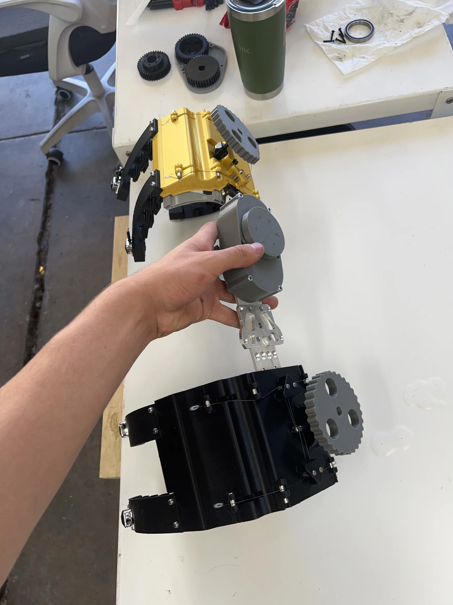
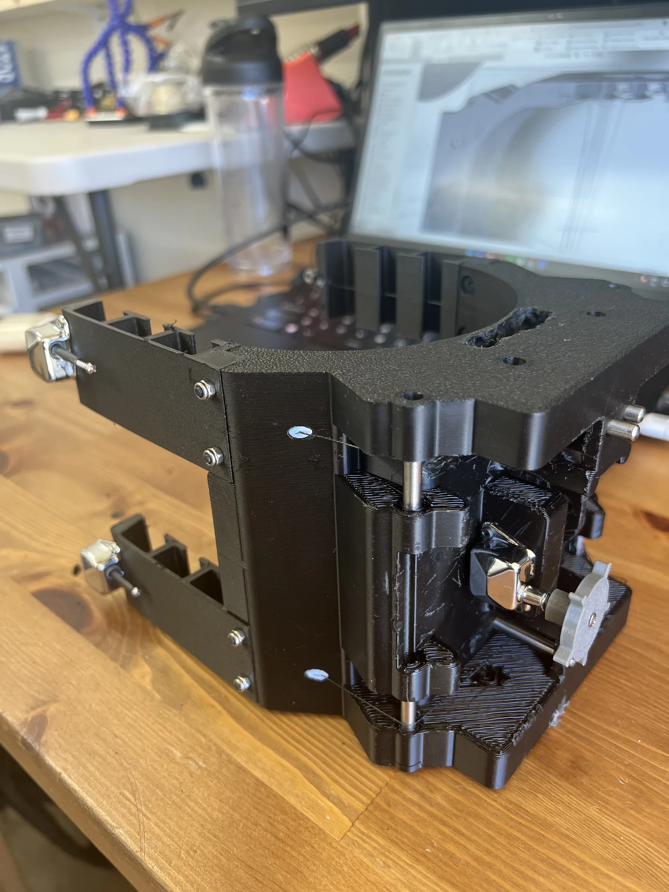
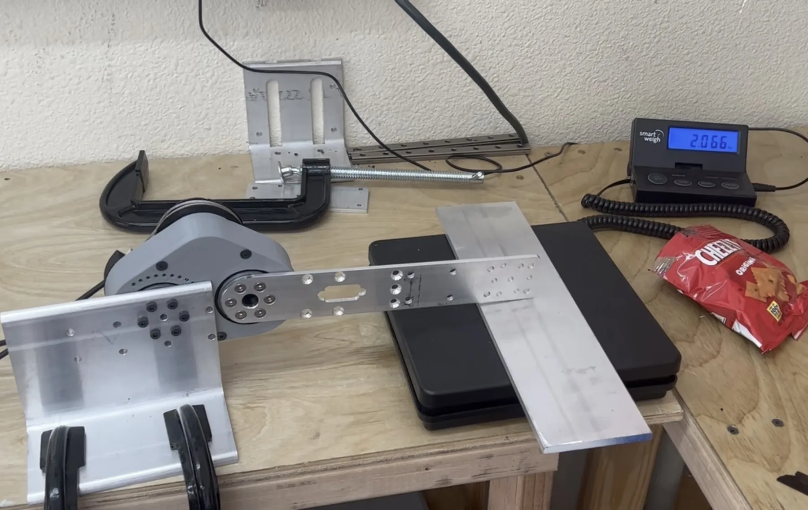
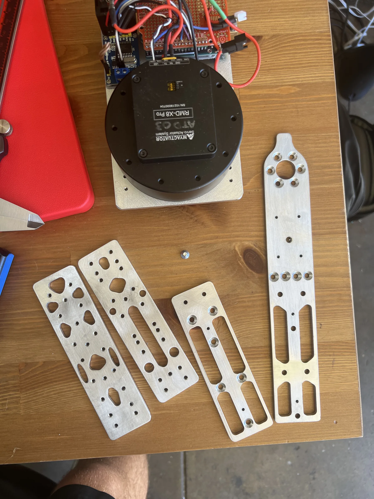
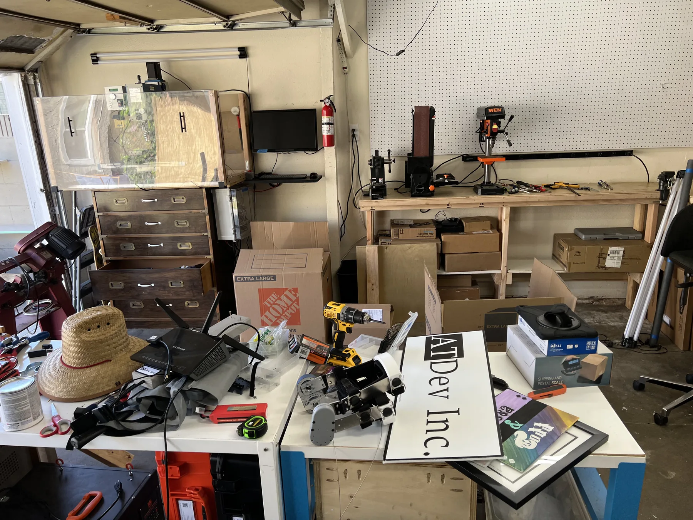

In summer 2022 I interned at AT Dev Inc, a medical device startup in Los Angeles that makes assistive technology for people with physical disabilities and post-surgical rehabilitation needs. I designed the fastening system for a new leg brace, ran the FEA and force tests that went into the FDA submission, and machined parts and fixtures for the prototypes. The brace is now FDA approved and on the market.
The role
AT Dev is a small startup, so everyone does several jobs. I sat with the engineering team on the leg brace that was heading for FDA approval, and in one summer covered CAD, FEA, machining, test documentation and shop setup. I also sat in on client calls to hear what users needed from the product, and observed investor meetings.
Main project
The brace needed a fastener a patient could tighten with little hand strength and a physician could tune to the individual leg. I designed the fastening system and then tested the brace components for the FDA submission.
Fastening system
The design pairs a 3D-scanned inner surface with a guitar-tuning-peg closure:
- 3D-scanned side: the inner surface is moulded from a 3D scan of the patient's leg, so it matches their anatomy.
- Tuning peg side: a guitar tuning peg tensions the closure, so tightening the brace takes very little force.
- Four independent fingers: each finger has its own adjustment, so the physician can set the fit at each point.
- String closure: a string runs through the fingers; pulling it wraps them around the leg and spreads the pressure evenly.


Testing and FEA for the FDA submission
I contributed to the FDA approval application by testing the brace components and documenting the results:
- Force-tested brace components to measure their safety margins.
- Confirmed the factor of safety was above the FDA requirement, with margin to spare.
- Ran finite element analysis in SolidWorks on the load-bearing parts.
- Wrote up the test procedures and results for the submission.
- Machined the test fixtures.

The brace prototype under test.
Other work
Most of the prototype and production parts were made in the shop, and I helped set the shop up as well.
Machining
- Programmed the CNC mill in Fusion 360 CAM.
- Turned cylindrical parts on the manual and CNC lathes.
- Used the bandsaw and drill press for stock preparation and holes.
- Designed and made a fan mount for the CNC mill's cooling system.
Design for manufacturing
- Used SolidWorks FEA to remove material from plates where it carried no load.
- Machined the lightened plates and load-tested them to check the FEA predictions.
- Revised parts based on how they machined and how they tested.

Shop setup
- Set up OctoPrint on the 3D printers so jobs could be sent from a browser.
- Laid out the shop for workflow and safety.
- Set up tool and inventory tracking.

Tools
SolidWorks (modelling, assemblies, FEA), Fusion 360 CAM, CNC milling, manual and CNC lathe, bandsaw, drill press, 3D printing, 3D scanning, force testing, and FDA test documentation. Materials included medical-grade plastics, aluminium and composites.
Results
- The fastening system is in production and used by patients.
- The product received FDA approval; the test data and documentation I produced were part of the submission.
- Patients need less force to secure the brace, and the physician can set the fit finger by finger.
- The 3D-scanned surface gives a closer fit than an off-the-shelf cuff.
- FEA-driven cutouts reduced the weight of the machined plates.
What I learned
This was my first look at a medical device going from concept to a product on the market. At a startup everyone does several jobs, so in one summer I did CAD, FEA, machining, test documentation and shop setup, and had to move quickly without dropping quality or regulatory requirements.
Seeing the brace on a patient made the design decisions concrete. Each choice about ergonomics, ease of use and reliability affected someone's mobility. I also saw how client feedback and investor meetings shape what gets built and when.